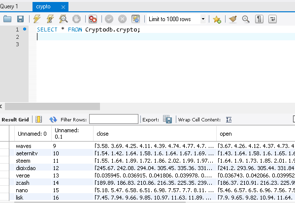
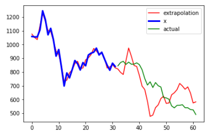
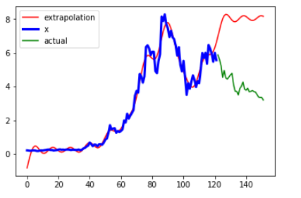

As a hobby, I like to trade cryptocurrency and participate in stock portfolio challenges. So, I decided why not make a bot!
Currently, there is a lot more work that needs to be done but the bones of it can be found on my github. Currently, I have done all the dirty work of aggregating plenty of data through web scraping and formatting. To prepare things for the future, I went ahead and created a cloud-based SQL database using AWS. In my limited experiences of computational finance through my internship, there is going to be tons of data and its going to be most efficient if I can just query it from a database instead of reading locally downloaded files.

Beyond data collection, I have created a few tecnical indicators such as moving averages and a schocastic relatvie strength index. Furthermore, I have created an implementation for volume analysis and have done some work already on the accuracy of extrapolation through fast fourier transformations. This has yielded some interesting data for further research purposes, and I am well aware of the limitations and problems of fft in financial predictions.


Currently I am looking into the application of ml via SVM and decision trees. Going forward, I also have plans to include a weight of some sort to quantitative reasoning based on sentiment analysis of the news/twitter/etc. Finally, I also have plans to create a facebook messenger bot to notify the user of updates. I have big plans, and will probably spend another year or so before this project reaches a somewhat finished stage.
https://camelot.ai/ - more content to come regarding results and code for different challenges that I compete in
Currently I am ranked in the top 20 of all users ranging from a few higschoolers to students of Harvard and MIT to employees of top investing companies, who typically sponsor the competitions. I also placed in the top 5 out of over 80 individuals in a challenge sponsored by DRW.
My answers to the problems can be found on github
Keep an eye out for an upcoming project in this category!